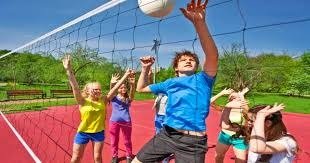

es una actividad formativa, ya sea recreativa o deportiva, donde los participantes aprenden las reglas, técnicas y tácticas básicas del voleibol para mejorar sus habilidades físicas y emocionales
ofrece beneficios físicos como la mejora de la coordinación, fuerza, agilidad, resistencia cardiovascular y la quema de calorías, y beneficios mentales y sociales como el desarrollo de la disciplina, concentración, trabajo en equipo, comunicación, autoestima y manejo del estrés, además de fomentar la sociabilidad y el compañerismo.
